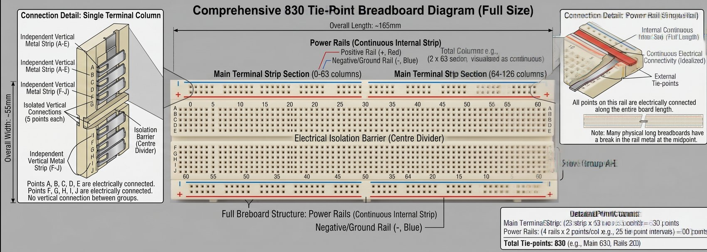

What learners build in this course
This course is the hardware-first starting point for the Embedded Systems & IoT track. Learners move from safe breadboard wiring to a Raspberry Pi-powered device that reads sensors, controls outputs, displays live data, and can be checked remotely over the network.
Breadboards, Assembly & Add-Ons
Before you ever power on a Raspberry Pi, you need to understand the board you'll be building circuits on. This module covers breadboard anatomy, safe wiring, choosing the right add-ons, and assembling your first real circuit — assuming you've never touched electronics hardware before.
A breadboard is a plastic board full of tiny spring-loaded holes that let you build circuits by pushing wires and component legs into them — no soldering required. It exists so you can prototype, test, and rewire a circuit in seconds instead of permanently joining metal every time you change your mind.
The holes aren't just decoration — underneath the plastic, certain rows of holes are electrically connected to each other by metal strips. Understanding which holes are connected to which is the single most important thing to learn before touching one.
A standard full-size breadboard has four separate zones. Here's the layout, top to bottom:
- Power rails — the long rows running the full length of the board, marked with a red (+) line and a blue/black (−) line. Every hole along a single rail is connected to every other hole on that same rail. This is where you distribute power and ground to the whole board.
- Terminal strips — the main grid in the middle. Each short vertical column of 5 holes (labeled a–e or f–j) is electrically connected within that column only. Row 12, columns a-e are one connected group; row 12, columns f-j are a completely separate group.
- The center gap — the trench splitting the board left/right. It exists specifically so you can straddle a chip across it without shorting its left-side pins to its right-side pins.
Here's a fully labeled 830 tie-point breadboard — the same anatomy from above, shown on a real board layout with every region called out.

| Label | What It Means |
|---|---|
| Overall Length / Width (~165mm × ~55mm) | Typical physical dimensions of a standard full-size breadboard — useful for confirming you have a full-size (not half-size) board. |
| Power Rails — Positive (red, +) / Negative (blue, −) | The two long rows running the edge of the board. Every hole along one rail is electrically tied together, letting you distribute power and ground to the whole board. |
| Main Terminal Strip Section | The central grid where components and jumper wires actually plug in. Divided into short 5-hole columns, each one an isolated connected group. |
| Electrical Isolation Barrier (Centre Divider) | The physical trench splitting the A–E row group from the F–J row group — lets you straddle a chip across it without shorting its own legs together. |
| Independent Vertical Metal Strip (A–E) | One connected group of 5 holes (rows A, B, C, D, E) within a single column — isolated from the F–J strip in that same column. |
| Independent Vertical Metal Strip (F–J) | The mirrored group below the center divider — rows F, G, H, I, J connected within a column, isolated from A–E. |
| Isolated Vertical Connections (5 points each) | Confirms each column strip ties together exactly 5 holes — not the whole row, and not the opposite side of the gap. |
| Internal Continuous Strip (rail) | The metal strip running underneath a power rail for its length, which is what actually carries the current between holes. |
| External Tie-Points | The holes you see and plug into on top of that internal strip. |
| "Break in rail metal at midpoint" note | A real-world manufacturing detail: on many long breadboards, the + or − rail is physically cut in the middle, so the left half's rail may not be connected to the right half's rail unless you bridge them with a jumper wire. |
| Detail Point Counts (630 + 200 = 830) | The math behind an "830 tie-point" board: 2 row-groups × 63 columns × 5 holes = 630 main tie-points, plus 4 rails × ~50 holes = 200 rail points. |
Jumper wires connect one point on the breadboard to another, or to the Raspberry Pi's pins. They come in three end types, and picking the right one matters:
| Type | Looks Like | Use For |
|---|---|---|
| Male–Male (M-M) | Solid pin on both ends | Breadboard hole → breadboard hole |
| Male–Female (M-F) | Solid pin one end, socket the other | Raspberry Pi GPIO pin → breadboard hole |
| Female–Female (F-F) | Socket on both ends | Pin header → pin header (e.g. Pi to a HAT riser, or sensor module with pin headers) |
The Raspberry Pi's GPIO (General Purpose Input/Output) pins operate at 3.3 volts, not 5 volts. This is different from an Arduino Uno, which is 5V — if you've seen Arduino tutorials, don't copy their voltage assumptions onto a Pi.
The Pi's 40-pin header does provide both 3.3V and 5V power pins (for powering external components), but only ever wire the signal lines at 3.3V.
Almost every first circuit is an LED, and almost every LED needs a current-limiting resistor in series with it — without one, an LED will pull too much current and burn out almost instantly. Here's the formula and how to use it:
R = (Vsupply − VLED) ÷ ILED — Resistance equals the leftover voltage divided by the current you want flowing.
Worked example, using a standard red LED on a Raspberry Pi GPIO pin:
- GPIO supply voltage: 3.3V
- Typical red LED forward voltage drop: ~2V (check your LED's datasheet if unsure)
- Target LED current: ~20mA (0.02A) — a safe, typical brightness
- R = (3.3 − 2) ÷ 0.02 = 65Ω minimum
- Round up to the nearest common resistor value: 220Ω or 330Ω are the standard "safe default" choices for GPIO LEDs — they dim the LED slightly but guarantee you're not over-driving it or the pin.
Resistors don't have their value printed as a number — they use colored bands. For the common 4-band resistors you'll use in this course, you only need to recognize a handful of colors to identify 220Ω and 330Ω on sight:
| Bands (in order) | Value |
|---|---|
| Red, Red, Brown, Gold | 220Ω |
| Orange, Orange, Brown, Gold | 330Ω |
Let's put it together. This circuit doesn't need a Raspberry Pi yet — you're only practicing breadboard wiring and safe assembly habits. (Module 6 will connect this exact circuit to GPIO code.)
- Place the LED so its two legs straddle the center gap — one leg on the left terminal strip, one on the right. Note which leg is longer — that's the anode (+). The shorter leg (often next to a flat edge on the LED's plastic case) is the cathode (−).
- Place a 220Ω or 330Ω resistor so one end shares a terminal strip column with the LED's anode (long leg), and the other end reaches a free column.
- Run a jumper wire from the resistor's free end to the breadboard's positive (+) power rail.
- Run a second jumper wire from the LED's cathode (short leg) column to the negative (−) power rail.
- For the pushbutton: place it straddling the center gap (most 4-leg breadboard buttons are sized exactly for this). Only two of the four legs are ever connected to each other internally — the other two are a separate connected pair. Straddling the gap keeps all four legs electrically separate until the button is pressed.
- Wire one side of the button to the positive rail (through a resistor, if you're prepping for GPIO input later — this is called a pull-down/pull-up resistor, covered in Module 5) and the other side to a terminal strip column you'll read as input.
Once you're comfortable with the bare breadboard, a handful of inexpensive add-ons make working with a Raspberry Pi dramatically easier. Here's what's actually worth having and why:
GPIO T-Cobbler / Breakout
A ribbon cable + adapter that "unfolds" the Pi's 40-pin header onto the breadboard itself, with each pin clearly labeled. Without one, you're stuck plugging individual jumper wires straight into the Pi's header, which is cramped and easy to miscount.
GPIO Ribbon Cable
The cable that connects the Pi's header to the T-Cobbler (or directly to a HAT). Look for one long enough to comfortably reach your breadboard without straining the header pins.
Breadboard Power Supply Module
A small board that clips onto the power rails and regulates an external power source (like a 9V battery or wall adapter) down to a clean 3.3V or 5V — so you're not relying on the Pi itself to power power-hungry add-ons like motors or many LEDs at once.
Digital Multimeter
Measures voltage, resistance, and continuity. Essential for checking whether two breadboard holes are actually connected, verifying a resistor's real value, and confirming a circuit is receiving the voltage you expect before you plug in anything expensive.
Jumper Wire Kit (M-M / M-F / F-F)
Buy a mixed pack up front. You will run out of the "right" wire mid-project constantly otherwise, and improvising with the wrong connector type is how shorts happen.
Half-Size vs Full-Size Breadboards
Full-size boards (830 points) give you room for multiple components at once; half-size (400 points) are fine for simple single-circuit lessons and more portable. This course assumes a full-size board so there's room to grow.
A HAT (Hardware Attached on Top) is a add-on board that plugs directly onto the Pi's 40-pin GPIO header, sitting on top of the Pi like a lid — no breadboard required. HATs exist so you can skip manual wiring for common, well-defined tasks. You don't need any of these for this module, but it's worth knowing what exists so you recognize them later in the course:
| HAT | What It's For |
|---|---|
| Sense HAT | Bundles a gyroscope, accelerometer, temperature/humidity/pressure sensors, and an 8×8 LED matrix — great for a single "starter sensor board" instead of wiring six separate parts |
| Motor HAT / Driver HAT | Lets the Pi safely control DC motors or servos, which draw more current than GPIO pins can supply directly (covered in Module 9) |
| ADC HAT / breakout (e.g. MCP3008-based) | Adds analog input — the Pi's GPIO pins are digital-only, so anything analog (a potentiometer, many analog sensors) needs one of these (covered in Module 7) |
| RTC (Real-Time Clock) HAT | Keeps accurate time using a small battery, for projects that run without internet access and need to know the correct time on boot |
- Double-check LED and any polarized component orientation (long leg = positive).
- Confirm no wire bridges the gap between the positive and negative power rails directly (a dead short) — trace every wire back to its rail before connecting power.
- Confirm your resistor is actually in the circuit path — not just nearby on the board, but electrically in series between power and the LED.
- If using a multimeter, set it to continuity mode and touch both probes across your intended connections to confirm they beep/connect as expected — before the Pi or any power source is connected.
- Only after all of the above: connect power, and watch for any smoke, smell, or unusual heat — disconnect immediately if you notice any.
🍓 Meet the Raspberry Pi
Boards, the GPIO pinout, and the peripherals you'll actually need before you can turn one on.
A Raspberry Pi is a single-board computer (SBC) — a complete, small computer with a CPU, memory, and ports, all on one credit-card-sized board. Unlike your laptop, it has no built-in screen, keyboard, or storage drive — you supply those, or run it "headless" (no monitor at all, controlled remotely).
What makes it different from a normal desktop is the GPIO header — a row of 40 pins along one edge that let the board directly control and read real-world electronics: LEDs, sensors, motors, switches. That's the part a laptop can't do.
| Board | Good For | Notes |
|---|---|---|
| Raspberry Pi 5 / 4 | This course, general projects, anything needing real performance | Full Linux OS, runs a desktop, most powerful |
| Raspberry Pi Zero 2 W | Small, low-power, battery-friendly projects | Same 40-pin GPIO layout, weaker CPU, smaller form factor |
| Raspberry Pi Pico | Simple, always-on microcontroller tasks | Not the same thing — no OS, no Linux, programmed differently (MicroPython/C on bare metal). This course is NOT about the Pico. |
- SoC (System on Chip) — the black chip in the middle; it's the CPU and GPU combined.
- microSD card slot (underside) — this is where the entire operating system lives. There's no internal hard drive.
- USB-C power port — this is power input only, not a data connection to a computer.
- USB-A ports — for keyboard, mouse, flash drives.
- Ethernet port — wired networking; Wi-Fi is also built in.
- Micro-HDMI ports (×2 on Pi 4/5) — video output to a monitor. Note: micro-HDMI, not full-size — you'll likely need an adapter cable.
- Camera (CSI) and Display (DSI) connectors — small ribbon-cable slots for the official Camera Module (Module 11) and touchscreens.
- 40-pin GPIO header — the row of pins along the top edge. This is what the rest of this course is built around.
The 40-pin header has three categories of pins, and mixing them up is the most common wiring mistake:
| Pin Type | What It Does |
|---|---|
| Power pins (3.3V, 5V) | Fixed voltage output to power external components. Never treat these as GPIO signal pins. |
| Ground (GND) pins | Common reference point for every circuit. Any circuit touching GPIO needs to share ground with the Pi. |
| GPIO pins (numbered) | General-purpose digital input/output — the pins you'll program in Module 4 onward. |
- A microSD card (16GB minimum, 32GB+ recommended) — this becomes your entire operating system and storage.
- A proper power supply — official Pi power adapters are rated for the current spikes the board needs; an underpowered phone charger causes random reboots and corrupted SD cards. This is a common, confusing failure mode for beginners.
- Either: a monitor + micro-HDMI cable + USB keyboard/mouse (for a normal first setup), or just a laptop on the same network (for a "headless" no-monitor setup, covered in Module 3).
- Optional but recommended: a case, for both physical protection and cooling.
💿 Raspberry Pi OS & First Boot
Turning a blank microSD card into a working Raspberry Pi — imaging, first boot, and setting up headless (no monitor) access.
The official Raspberry Pi Imager tool (free, from raspberrypi.com/software) writes an operating system onto your microSD card. This step happens on your regular computer, not on the Pi itself — the Pi doesn't exist as a working device until this card is ready.
- Download and install Raspberry Pi Imager on your PC/Mac.
- Insert your microSD card via a USB card reader.
- Open Imager → Choose Device → select your Pi model.
- Choose OS → Raspberry Pi OS (64-bit) is the standard choice. Choose the Lite version if you plan to go headless (no desktop environment, smaller and faster); choose the full version if you want a monitor and desktop.
- Choose Storage → select your microSD card. Double-check this is the SD card and not your PC's main drive — Imager will erase whatever you select.
Before clicking write, click the gear/advanced options icon. This is where you configure everything you'd otherwise need a monitor and keyboard to set up manually:
- Enable SSH — check this box. Without it, you cannot connect to the Pi remotely at all.
- Set username and password — pick your own; don't leave this on any default.
- Configure Wi-Fi — enter your network name and password so the Pi connects automatically on first boot.
- Set hostname — e.g.
mypi.local— lets you find the Pi on your network by name instead of hunting for its IP address.
- Insert the finished microSD card into the Pi (slot is on the underside).
- Connect power last, after everything else is plugged in.
- Wait 60–90 seconds for first boot — it's doing first-time setup in the background, so don't panic if nothing appears on a monitor immediately.
- Headless: from your PC's terminal, run
ssh username@mypi.local(using the username and hostname you set in Imager). - With monitor: you'll be dropped into either a desktop or a login prompt directly.
ssh alex@mypi.local # First connection asks to confirm the host's fingerprint — type "yes" # Then enter the password you set in Imager
Once connected, raspi-config is a text-based menu for settings you'll come back to constantly throughout this course — enabling I2C/SPI/Camera (Modules 7, 11), expanding filesystem, changing hostname, and more.
sudo raspi-config
Navigate with arrow keys, Enter to select, Tab to move between buttons. You'll return to this tool repeatedly in later modules to enable specific interfaces.
⌨️ Linux & Command Line Essentials
Raspberry Pi OS is Linux, and most of this course happens in a terminal, not a mouse-driven interface. Here's the minimum command set you need before writing any GPIO code.
| Command | What It Does |
|---|---|
pwd | Print working directory — shows where you currently are |
ls | List files and folders in the current directory |
ls -la | List everything, including hidden files, with details (permissions, size, date) |
cd foldername | Change directory into "foldername" |
cd .. | Move up one directory level |
cd ~ | Jump straight to your home directory |
| Command | What It Does |
|---|---|
mkdir projectname | Create a new folder |
touch file.py | Create a new empty file |
cp source dest | Copy a file |
mv source dest | Move or rename a file |
rm file.py | Delete a file — no trash bin, this is permanent |
rm -r foldername | Delete a folder and everything inside it — same permanence warning, doubled |
cat file.py | Print a file's contents to the screen |
rm does not go to a recycle bin. Double-check the filename before hitting enter, especially with rm -r.You'll write Python scripts directly on the Pi. nano is the easiest terminal text editor to start with (vim is more powerful but has a steeper learning curve — feel free to explore it later).
nano blink.py # Type your code directly # Ctrl+O then Enter → saves the file # Ctrl+X → exits nano
sudo ("superuser do") runs a command with administrator privileges. Some tasks — installing software, editing system config, accessing certain hardware pins — require it; running everything with sudo out of habit is unnecessary and can mask real permission problems.
sudo apt update sudo apt upgrade -y
apt is Raspberry Pi OS's package manager — how you install nearly all software from the command line. update refreshes the list of what's available; upgrade actually installs newer versions of what you have.
python3 blink.py
Every GPIO script from Module 5 onward is run exactly this way — python3 followed by the filename. Press Ctrl+C to stop a running script.
🐍 GPIO Programming Basics
Reading and writing GPIO pins from Python — the bridge between the breadboard circuits from Module 1 and actual code.
From Module 2: pins can be referred to by their physical position (BOARD numbering, 1–40) or by their internal chip number (BCM numbering, e.g. GPIO17). Every GPIO library needs to be told which system you're using — mixing them up in your head is the single most common beginner bug.
| System | Example | When You'll See It |
|---|---|---|
| BOARD | Pin 11 | Counting straight down the physical header |
| BCM | GPIO17 | Most tutorials and libraries default to this — it's what this course uses |
| Library | Style | Best For |
|---|---|---|
| gpiozero | High-level, beginner-friendly (e.g. LED(17).on()) | This course — faster to read, faster to write, fewer lines for the same result |
| RPi.GPIO | Lower-level, more manual (GPIO.setup(), GPIO.output()) | Understanding what's happening underneath, or following older tutorials |
Both come pre-installed on Raspberry Pi OS. This course leads with gpiozero because it maps directly onto real components — an LED object, a Button object — matching how you're already thinking about the breadboard.
Using the exact LED + resistor circuit you built in Module 1, wired so the resistor leg connects to GPIO17 instead of the positive power rail:
from gpiozero import LED from time import sleep led = LED(17) # GPIO17, BCM numbering while True: led.on() sleep(1) led.off() sleep(1)
Run it with python3 blink.py, stop it with Ctrl+C. That's the entire pattern you'll reuse for every digital output device in this course — create an object with a pin number, call methods on it.
from gpiozero import Button button = Button(2) # GPIO2 while True: button.wait_for_press() print("Button pressed!")
gpiozero automatically handles the internal pull-up/pull-down resistor configuration for you here — a detail RPi.GPIO makes you set manually. This is part of why gpiozero reads so much cleaner for beginners.
from gpiozero import LED, Button led = LED(17) button = Button(2) button.when_pressed = led.on button.when_released = led.off from signal import pause pause()
when_pressed and when_released let you assign a function to run automatically on an event, instead of manually polling in a loop. pause() just keeps the script alive waiting for those events.
💡 Digital I/O Projects
Three complete projects — LED patterns, a debounced button, and a buzzer — combining the wiring from Module 1 with the code patterns from Module 5.
Wire three LEDs (red, yellow, green) each with their own 220Ω resistor, each to a separate GPIO pin, all sharing one ground connection back to the negative rail.
from gpiozero import LED from time import sleep red = LED(17) yellow = LED(27) green = LED(22) try: while True: red.on(); sleep(4); red.off() green.on(); sleep(4); green.off() yellow.on(); sleep(1); yellow.off() except KeyboardInterrupt: print("Stopped.")
Mechanical buttons don't switch cleanly — the metal contacts physically bounce for a few milliseconds, which can register as several rapid presses instead of one. This is called bounce, and it's why a naive button script sometimes counts 3 presses for 1 press.
from gpiozero import Button count = 0 # bounce_time filters out rapid duplicate triggers within 0.1 seconds button = Button(2, bounce_time=0.1) def on_press(): global count count += 1 print(f"Press #{count}") button.when_pressed = on_press from signal import pause pause()
bounce_time slightly (e.g. to 0.2), or check your wiring — a loose breadboard connection can also mimic bounce.A passive piezo buzzer wires exactly like an LED (one leg to a GPIO pin through a resistor, one to ground) and is controlled identically in code.
from gpiozero import Buzzer, Button from signal import pause buzzer = Buzzer(27) button = Button(2) button.when_pressed = buzzer.on button.when_released = buzzer.off pause()
Combine All Three
Build one circuit with all three LEDs, the button, and the buzzer on one breadboard. Write a script where pressing the button cycles through the traffic light sequence once, then sounds the buzzer for half a second at the end. This forces you to manage multiple gpiozero objects and event handlers together in one script — the same shape of problem you'll face in the Module 12 capstone.
📊 Analog Sensing with ADCs
The Raspberry Pi's GPIO pins are digital-only — they can only read HIGH or LOW, never "somewhere in between." Here's how to add real analog sensing with an external chip.
Digital pins read exactly two states: roughly 0V (LOW/off) or roughly 3.3V (HIGH/on) — nothing in between. Many real-world sensors — a potentiometer's position, a light sensor's brightness, a flex sensor's bend — output a continuously varying voltage, not a clean on/off signal. Microcontrollers like Arduino have built-in circuitry (an ADC) to read those in-between voltages directly. The Raspberry Pi's GPIO does not — you need to add that circuitry yourself with an external chip.
The MCP3008 is a small chip that reads up to 8 separate analog inputs and reports each one back to the Pi as a digital number (0–1023) over a protocol called SPI (covered in more depth in Module 8). It's the standard, well-documented choice for adding analog sensing to a Pi project.
| MCP3008 Pin | Connects To |
|---|---|
| VDD, VREF | Pi 3.3V |
| AGND, DGND | Pi GND |
| CLK, DOUT, DIN, CS | Pi SPI pins (GPIO11, 9, 10, 8 respectively) |
| CH0–CH7 | Your analog sensors — up to 8 at once |
sudo raspi-config → Interface Options → SPI → Enable, then reboot, before any code below will work.Wire a potentiometer's outer two legs to 3.3V and GND, and its middle (wiper) leg to MCP3008 channel 0.
from gpiozero import MCP3008 from time import sleep pot = MCP3008(channel=0) while True: print(f"Value: {pot.value:.2f}") # 0.0 to 1.0 sleep(0.5)
gpiozero's MCP3008 class handles the SPI communication for you and gives back a clean 0.0–1.0 float, regardless of the chip's internal 0–1023 resolution — the same "let the library handle the messy part" pattern from Module 5.
from gpiozero import MCP3008, PWMLED from time import sleep pot = MCP3008(channel=0) led = PWMLED(17) # PWMLED supports variable brightness, not just on/off while True: led.value = pot.value # directly map 0.0-1.0 pot reading to 0.0-1.0 LED brightness sleep(0.05)
Turning the potentiometer now smoothly dims the LED — your first real analog-to-digital-to-analog pipeline: a physical continuous input, read through the ADC, driving a continuously variable output (PWM, covered fully in Module 9).
🔗 I2C & SPI — Displays & Sensors
Two communication protocols that let you connect complex devices — displays, sensors, real-time clocks — using just a few shared wires instead of one GPIO pin per signal.
| I2C | SPI | |
|---|---|---|
| Wires needed | 2 (SDA, SCL) — shared by ALL I2C devices | 4+ (MOSI, MISO, CLK, plus one CS per device) |
| Speed | Slower | Faster |
| Multiple devices | Easy — each has a unique address on the same 2 wires | Needs a separate CS (chip select) wire per device |
| Common uses | Sensors, small OLED displays, RTC modules | ADCs (Module 7), SD cards, faster displays |
sudo raspi-config
# Interface Options → I2C → Enable → reboot
Once enabled and rebooted, install the detection tool:
sudo apt install -y i2c-tools i2cdetect -y 1
This prints a grid showing every I2C device's address currently detected on the bus — the fastest way to confirm a sensor is wired correctly before writing a single line of code.
Wire VIN→3.3V, GND→GND, SCL→GPIO3, SDA→GPIO2 — the same two I2C pins every I2C device shares.
pip3 install adafruit-circuitpython-bme280
import board from adafruit_bme280 import basic as adafruit_bme280 i2c = board.I2C() bme = adafruit_bme280.Adafruit_BME280_I2C(i2c) print(f"Temp: {bme.temperature:.1f} C") print(f"Humidity: {bme.humidity:.1f} %") print(f"Pressure: {bme.pressure:.1f} hPa")
A small 128×64 OLED screen — same two I2C wires, different address on the bus.
pip3 install adafruit-circuitpython-ssd1306 pillow
import board import adafruit_ssd1306 from PIL import Image, ImageDraw i2c = board.I2C() oled = adafruit_ssd1306.SSD1306_I2C(128, 64, i2c) oled.fill(0) oled.show() image = Image.new("1", (oled.width, oled.height)) draw = ImageDraw.Draw(image) draw.text((0, 0), "Hello, Pi!", fill=255) oled.image(image) oled.show()
⚙️ PWM & Motors
Controlling servos and DC motors — and the one rule that protects your Pi: motors never connect straight to GPIO.
PWM (Pulse Width Modulation) is how a digital-only pin fakes an analog-style output. Instead of a steady voltage, the pin switches on and off very rapidly — the duty cycle (the percentage of time it's on vs. off) determines the effective average power. A 100% duty cycle is full on, 50% is roughly half power, 0% is off.
You already saw this in Module 7's PWMLED — dimming an LED is PWM. Servos and motor speed control both use the exact same underlying concept.
A servo moves to a specific angle (usually 0°–180°) based on the PWM signal it receives, and holds that position — unlike a continuous DC motor, which just spins.
from gpiozero import Servo from time import sleep servo = Servo(17) while True: servo.min() # -1, roughly 0 degrees sleep(1) servo.mid() # 0, roughly 90 degrees sleep(1) servo.max() # 1, roughly 180 degrees sleep(1)
DC motors draw far more current than a GPIO pin can safely provide, and — critically — spinning a motor down generates a voltage spike (back-EMF) that can damage the Pi if wired directly. A motor driver chip (like the L298N or TB6612) sits between the Pi and the motor: the Pi sends it a low-power control signal, and the driver switches the motor's separate, higher-current power supply.
| Pi Side | Motor Driver | Motor Side |
|---|---|---|
| GPIO control pins (low current) | Switches high current based on GPIO signal | External motor power supply (separate from Pi) |
from gpiozero import Motor from time import sleep # forward and backward pins go to the motor driver's control inputs, NOT the motor directly motor = Motor(forward=17, backward=27) motor.forward() sleep(2) motor.backward() sleep(2) motor.stop()
gpiozero's Motor class assumes you've wired those two GPIO pins into a motor driver's inputs — it's controlling the driver, which controls the motor.
📡 Networking & Remote Access
Going fully headless — reliable SSH, a graphical remote desktop when you need one, and giving your Pi an address that doesn't change.
ssh alex@mypi.local
# or, if the hostname doesn't resolve:
ssh alex@192.168.1.42
If mypi.local doesn't resolve on your network, find the Pi's IP address instead — either check your router's connected-devices list, or run hostname -I directly on the Pi if you have any access to it.
SSH gives you a terminal only. For a full graphical desktop remotely (useful for Module 11's camera preview, for example), enable VNC:
sudo raspi-config
# Interface Options → VNC → Enable
Then install RealVNC Viewer on your PC/Mac/phone and connect using the same hostname or IP you use for SSH. Note this only works if you installed the full Raspberry Pi OS Desktop, not the Lite version from Module 3.
By default, your router can hand the Pi a different IP address each time it reconnects, which breaks any script or bookmark relying on a fixed address. Two ways to fix this:
| Method | How | Best For |
|---|---|---|
| DHCP Reservation | Set in your router's admin page — tell the router to always assign the Pi's MAC address the same IP | Most setups — doesn't touch the Pi's own config at all |
| Static IP on the Pi | Edit /etc/dhcpcd.conf directly on the Pi | When you don't have router admin access |
# copy a file TO the Pi scp myscript.py alex@mypi.local:/home/alex/ # copy a file FROM the Pi scp alex@mypi.local:/home/alex/data.csv ./
scp ("secure copy") uses the same SSH connection you already have configured — no extra setup required.
📷 Camera & Computer Vision Basics
Connecting the official Camera Module, capturing photos and video, and a first pass at real computer vision with OpenCV.
- Power off the Pi completely before connecting the ribbon cable — this port isn't hot-swappable.
- Gently pull up the black plastic clip on the CSI camera port (from Module 2's board anatomy).
- Insert the ribbon cable with the blue side facing the Ethernet port (orientation varies slightly by Pi model — check silkscreen labels if unsure), then push the clip back down to lock it.
- Power on, then enable the camera interface:
sudo raspi-config→ Interface Options → Camera → Enable → reboot.
Modern Raspberry Pi OS uses libcamera tools instead of the older raspistill/raspivid commands you may see in older tutorials.
# Take a single photo libcamera-still -o photo.jpg # Record 10 seconds of video libcamera-vid -t 10000 -o video.h264
-t 10000 means 10,000 milliseconds — 10 seconds. This trips people up because most other places in Linux measure time in seconds.from picamera2 import Picamera2 from time import sleep picam2 = Picamera2() picam2.start() sleep(2) # let the sensor's auto-exposure settle first picam2.capture_file("photo.jpg") picam2.stop()
Picamera2 is the current official Python library, replacing the older (now deprecated) picamera package — if you find tutorials using import picamera without the "2", they're written for the older Pi OS and won't work the same way here.
OpenCV is the standard computer vision library — face detection, motion detection, edge detection, and far more, all built on the idea of treating an image as a grid of numbers you can process.
pip3 install opencv-python
import cv2 from picamera2 import Picamera2 picam2 = Picamera2() picam2.configure(picam2.create_preview_configuration()) picam2.start() prev_frame = None while True: frame = picam2.capture_array() gray = cv2.cvtColor(frame, cv2.COLOR_BGR2GRAY) gray = cv2.GaussianBlur(gray, (21, 21), 0) if prev_frame is not None: diff = cv2.absdiff(prev_frame, gray) if diff.mean() > 5: print("Motion detected!") prev_frame = gray
This compares each frame to the previous one — a meaningful difference between frames means something moved. It's a simple, CPU-cheap technique, not full object recognition, but it's the foundation most beginner vision projects start from.
import picamera (no "2") and raspistill commands. What should you do?🏁 Capstone — Environmental Monitor & Alert Station
One project pulling together every module: breadboard wiring, GPIO, analog sensing, I2C, PWM, networking, and (optionally) the camera — built into a single device that actually does something useful.
A desk or room monitor that reads real environmental data, displays it locally, alerts you when something crosses a threshold, and is checkable remotely — the same shape of project as any real IoT sensor node.
- Sensing: A BME280 (Module 8) reading temperature, humidity, and pressure over I2C.
- Display: An SSD1306 OLED (Module 8) showing current readings, updating every few seconds — same I2C bus as the sensor, different address.
- Alerting: An LED + buzzer (Module 6) that trigger when temperature crosses a threshold you set — e.g. too hot, flash the LED and beep.
- Input: A button (Module 6) that cycles the OLED display between temperature, humidity, and pressure views on press.
- Dimming: A potentiometer through the MCP3008 (Module 7) controlling the OLED's or LED's brightness, so the display isn't blinding in a dark room.
- Remote check-in: A small Python script reachable over SSH (Module 10) that prints the latest reading on demand — or, as a stretch goal, logs readings to a file you can
scpoff the Pi. - Optional stretch: Add the Camera Module (Module 11) with simple motion detection to snap a photo whenever someone's in the room, timestamped alongside the sensor log.
The real skill this capstone tests isn't any single sensor — it's combining several independent event sources (a timer for sensor polling, a button press, a threshold check) into one script that doesn't block itself. A pattern worth using:
from gpiozero import LED, Buzzer, Button, MCP3008 import board, adafruit_bme280.basic as adafruit_bme280 import adafruit_ssd1306 from time import sleep TEMP_THRESHOLD = 28.0 # Celsius — adjust to your room i2c = board.I2C() bme = adafruit_bme280.Adafruit_BME280_I2C(i2c) oled = adafruit_ssd1306.SSD1306_I2C(128, 64, i2c) led = LED(17) buzzer = Buzzer(27) button = Button(2) dimmer = MCP3008(channel=0) view = 0 # 0=temp, 1=humidity, 2=pressure def cycle_view(): global view view = (view + 1) % 3 button.when_pressed = cycle_view while True: temp = bme.temperature # alerting if temp > TEMP_THRESHOLD: led.on(); buzzer.on() else: led.off(); buzzer.off() # display — update based on current view + dimmer-controlled contrast could go here oled.fill(0) # ... draw whichever reading `view` selects ... oled.show() sleep(1)
Notice the loop never blocks on any single thing for long — the button's when_pressed callback fires independently of the main loop's timing, which is the same event-driven pattern from Module 5, just with more pieces running at once.
| System | Passes When… |
|---|---|
| Sensing | The BME280 returns live, plausible temperature/humidity/pressure values (not 0 or an error) |
| Display | The OLED shows a current reading and updates without a manual restart |
| Alerting | Crossing your chosen threshold reliably triggers the LED and buzzer, and stops when it drops back below |
| Input | Pressing the button cycles the display view without duplicate/bounced triggers |
| Remote access | You can SSH in from another device on the network and read the latest value without touching the Pi physically |
Ship It
Get every checkpoint above running as one continuous script, wired on a single breadboard, and leave it running unattended for at least an hour. This is the same bar every real embedded project has to clear — not just "the code runs once," but "it keeps running correctly without you standing over it."
- BME280 sensor reading over I2C
- SSD1306 OLED display showing live readings
- LED + buzzer alert on a temperature threshold
- Button-driven view cycling, debounced
- Reachable and checkable over SSH from another device
- Runs unattended for 60+ minutes without crashing or hanging